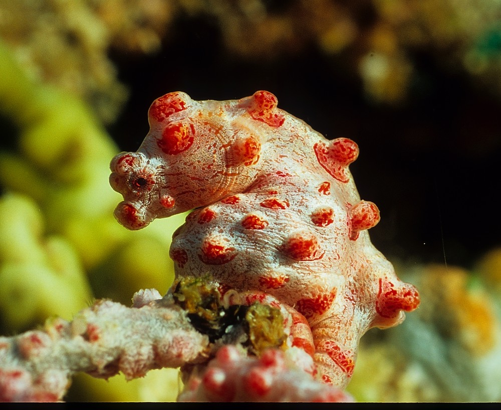
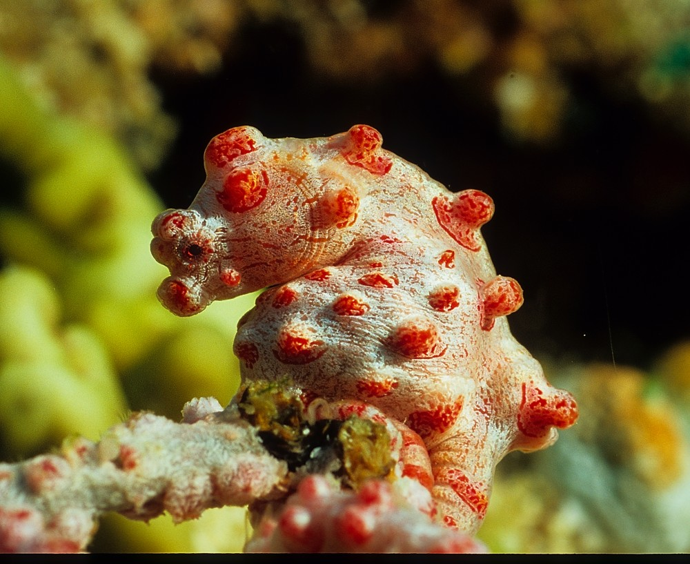

Seepferdchen
 

Die Seepferdchen (Hippocampus) gehören zu den Knochenfischen. Sie fallen besonders durch ihr Äußeres auf, das von der typischen „Fisch“-Gestalt abweicht. Ihr Kopf erinnert etwas an den eines Pferdes, ihr Hinterleib wirkt im Vergleich zu vielen anderen Knochenfischen etwas „wurm“-artig. Gemeinsam mit den Fetzenfischen und weiteren Arten bilden sie die Familie der Seenadeln (Syngnathidae).
Steckbrief
- Größe: 1,5 bis 35,5 cm
- Geschwindigkeit: 1,5 m/h
- Gewicht nicht bekannt
- Lebensdauer: 1-5 Jahre
- Nahrung: Salzkrebschen, Plankton
- Feinde: Fische, Krabben, Rochen
- Lebensraum: flache, tropische und gemäßigte Meere
- Ordnung: Seenadelartige
- Familie: Seenadeln
- Wissenschaftl. Name: Hippocampus
- Merkmale: pferdeähnlicher Kopf, Männchen haben Bauchtasche
Quelle: Wikipedia, Tierchenwelt.de